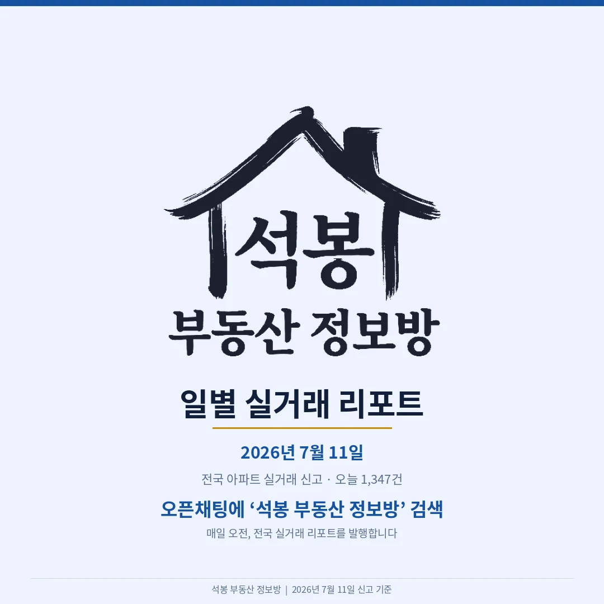
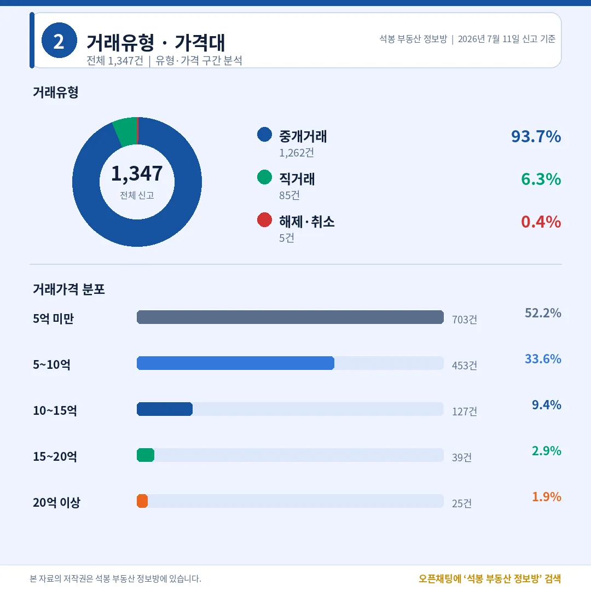
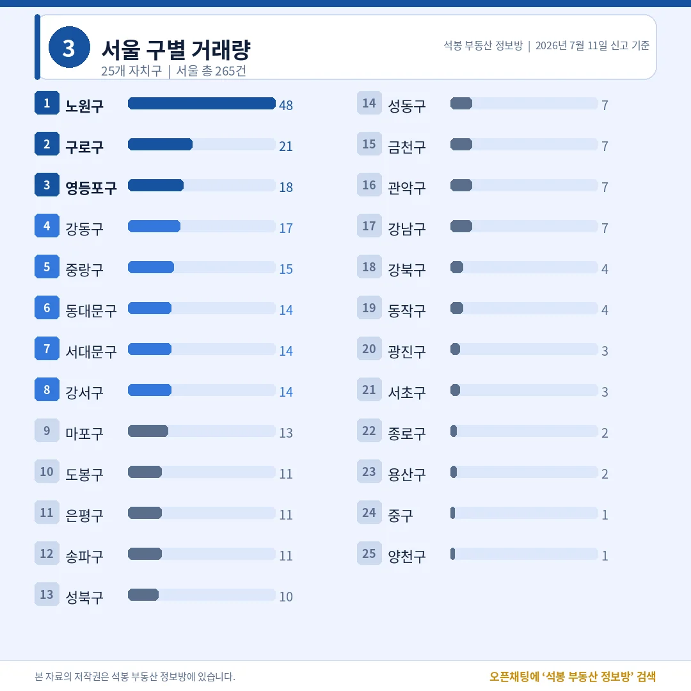
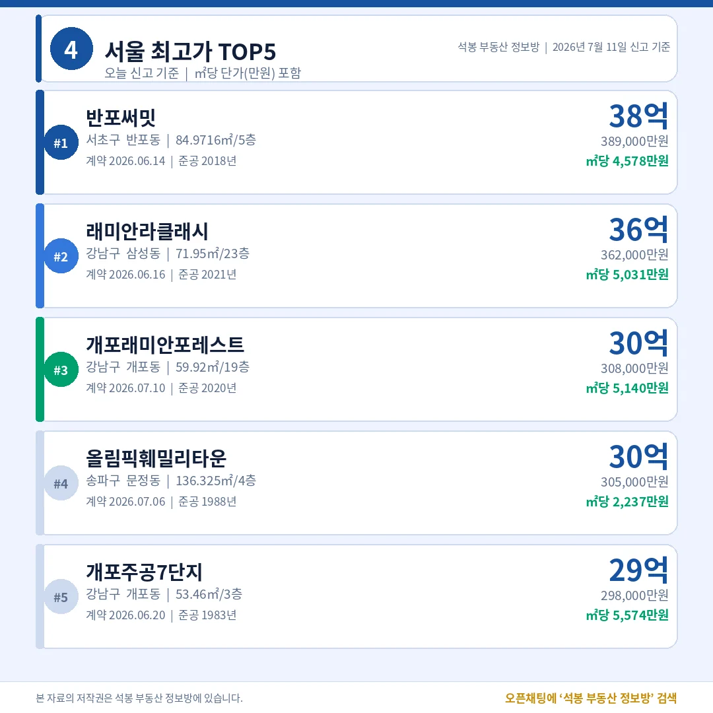
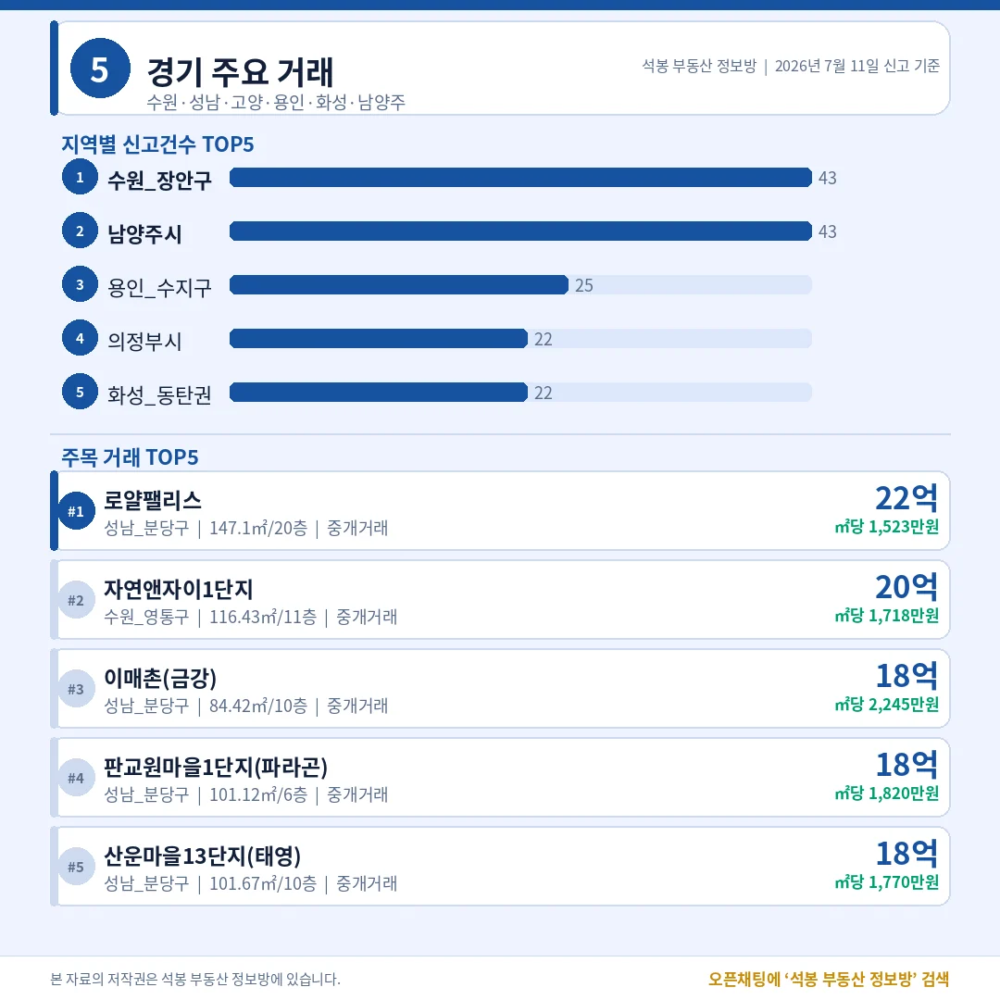
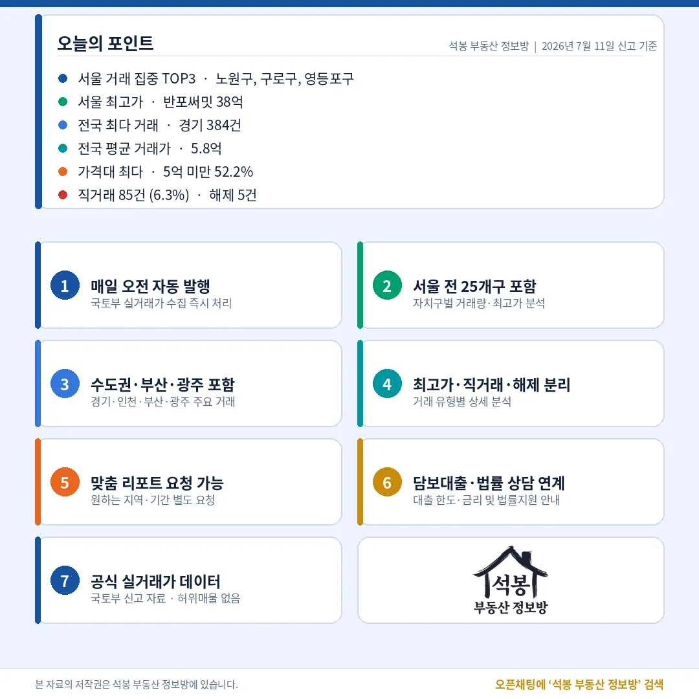

어제 하루 전국에서 아파트 1,347건이 실거래로 신고됐습니다. 서초 반포에선 39억짜리 거래가, 지방에선 3억 미만 거래가 같은 날 쏟아졌죠. 숫자 하나하나에 시장의 온도가 담겨 있습니다. 오늘 신고분, 핵심만 짚어 드립니다.
오늘 시장 한눈에 — 신고 1,347건, 99.6%가 유효거래

전체 1,347건 가운데 유효거래가 1,342건, 해제·취소는 단 5건(0.4%)이었습니다. 계약이 뒤집히는 비율이 이렇게 낮다는 건, 시장이 눈치보기(관망)보다는 실수요 중심으로 움직이고 있다는 신호로 읽힙니다. 직거래는 85건(6.3%) — 중개사를 끼지 않은 거래로, 가족·지인 간 거래이거나 증여성 거래일 가능성이 있는 부분입니다.
가격대별로는 5억 미만이 703건(52.2%)으로 절반을 넘었고, 5~10억이 453건(33.6%)으로 뒤를 이었습니다. 20억 이상은 25건(1.9%). 거래의 몸통은 중저가인데 시장의 시선은 고가에 쏠리는, 전국 시장의 이중 구조가 그대로 보입니다.
어디서 거래됐나 — 수도권 55%, 서울 1위는 노원

지역별로는 경기가 384건으로 가장 많았고 서울 265건, 인천 92건 순. 수도권을 합치면 전체의 55%입니다. 지방에서는 부산 98건, 광주 83건, 대구 53건이었습니다.
서울 안에서는 노원구가 48건으로 압도적 1위, 구로 21건·영등포 18건이 뒤를 이었습니다. 반면 강남구는 7건, 서초구는 3건. 거래량만 보면 서울 시장을 움직이는 건 강남이 아니라 중저가 실수요 지역이라는 사실이 드러납니다.
오늘의 최고가 — 반포써밋 38.9억, TOP5 전부 강남3구

어제 서울 최고가는 서초구 반포써밋 전용 84㎡, 38.9억이었습니다. 래미안라클래시(강남) 36.2억, 개포래미안포레스트 30.8억, 올림픽훼밀리타운(송파) 30.5억, 개포주공7단지 29.8억 순 — 다섯 곳 모두 강남3구(서초·강남·송파)입니다.
흥미로운 건 ㎡당 단가입니다. 1983년 준공된 개포주공7단지가 ㎡당 5,574만원으로 단가로는 오늘 1위. 낡은 아파트가 신축보다 비싼 이유, 바로 재건축 기대감입니다. 거래량 1위는 노원인데 가격 1위는 강남3구 — 서울 안에 전혀 다른 두 시장이 공존합니다.
수도권 밖은 어땠나 — 경기·인천·부산·광주

전국 거래량 1위 경기(384건)를 비롯해 인천·부산·광주의 지역별 상세는 카드로 정리했습니다. 같은 날 신고인데도 지역마다 주력 가격대와 분위기가 다릅니다. 우리 동네가 어디쯤인지 카드에서 확인해 보세요.
오늘의 인사이트

어제 시장은 거래량은 노원·구로 같은 실수요 지역, 가격은 강남3구라는 두 축이 뚜렷했습니다. 해제율 0.4%로 거래의 '진성' 비율이 높았고, 5억 미만이 절반을 넘는 중저가 장세 속에 최고가 TOP5는 전부 강남3구가 채웠습니다. 내일 볼 포인트는 두 가지 — ① 직거래 비중(6.3%)이 더 오르는지, ② 강남3구 밖에서 신고가 거래가 나오는지입니다.
매일 아침, 전국에서 어제 아파트가 얼마나·어디서·얼마에 팔렸는지 가장 먼저 정리해 드리겠습니다.
원자료: 국토교통부 실거래가 공개시스템(2026년 7월 11일 신고분) · 편집·제작: 석봉 부동산 정보방 · 본 자료는 정보 제공 목적이며 투자 권유가 아닙니다.